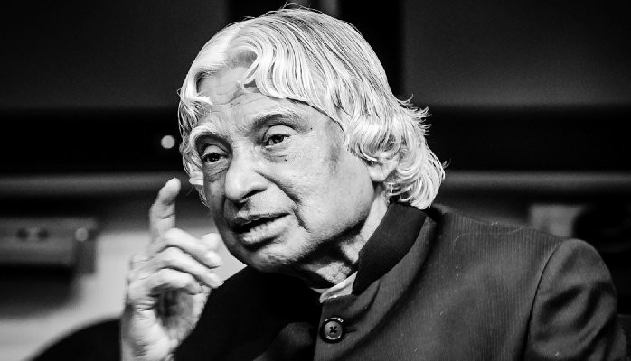

Home
Dr. A.P.J. Abdul Kalam's Legacy
Dr. A.P.J. Abdul Kalam, known as the "Missile Man of India," was a visionary leader, renowned scientist, and the 11th President of India (2002-2007).
A dedicated advocate for education and youth empowerment, Dr. Kalam inspired millions with his simplicity, humility, and forward-thinking vision for India.
Explore this website to learn more about his life, achievements, and the indelible mark he left on the world.
